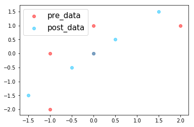
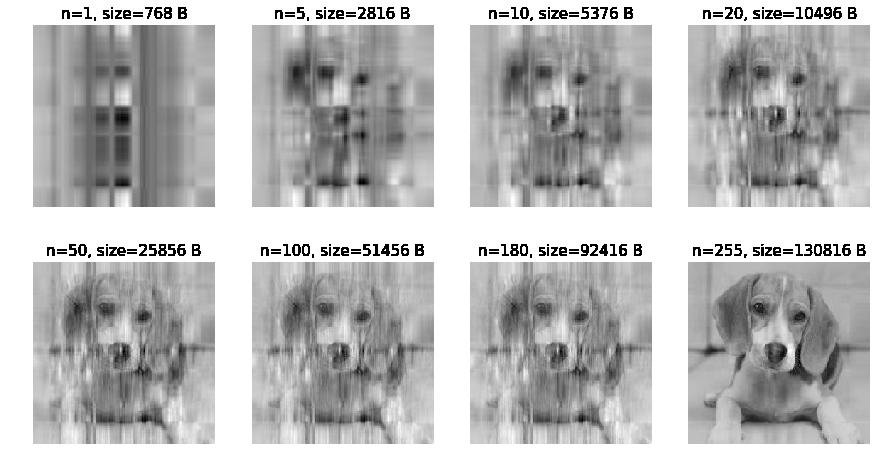
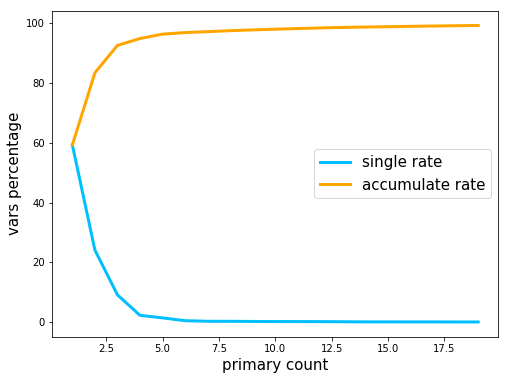

foolish fly fox's blog
foolish fly fox's blog
--Stay hungry, stay foolish.
--Forever young, forever weeping.
PCA 的简化数据
PCA 的原理见 PCA的数学原理。
PCA 的作用：用于数据预处理阶段，实现数据降维，剔除噪声。
PCA 的原理
设矩阵 的形式为：
其中，每一行表示一个样本，每一列表示所有样本的一个特征。例如 表示第 个样本的第 个特征。
PCA 的目的是将样本的 维变为 维，其中 ，这即为数据的降维过程。
我们需要一个矩阵 ，使得 ，其中
是一个 n×1 的列向量。
我们得到的矩阵 的列向量 都是所有样本点以 的 为基，在其上的投影，投影越分散，包含的信息量就越大，而数据的分散程度是通过方差体现的，所以我们希望 尽可能大。另外我们希望两个不同的列向量之间没有信息重叠，即两个不同的列向量 和 好像正交，故要满足上述条件，就要求： 且 尽可能大，故有：
故 其实是一个由 的特征向量组成的矩阵，其对应的特征值是最大的前 个。
PCA 的思路
将数据转换成前 N 个主成分的伪代码大致如下：
- 去除平均值
- 计算协方差矩阵
- 计算协方差矩阵的特征值和特征向量
- 将特征向量从大到小排序
- 保留最上面的 N 个特征向量
- 将数据转换到上述 N 个特征向量构建的新空间中
PCA 实现代码
def pca(data_mat, top_nf): mean_vals = np.mean(data_mat, axis=0) std_data = data_mat - mean_vals # rowvar: 0-一行表示一个样本，not 0-一列表示一个样本 # cov_mat = np.cov(std_data, rowvar=0) cov_mat = std_data.T * std_data eig_vals, eig_vects = np.linalg.eig(np.mat(cov_mat)) eig_val_indices = np.argsort(eig_vals) n_eig_i = eig_val_indices[-1:-1-top_nf:-1] n_eig_vect = eig_vects[:, n_eig_i] low_dd_mat = std_data * n_eig_vect recon_mat = low_dd_mat*n_eig_vect.T+mean_vals # low_dd_mat 降维后的数据 # recon_mat 降维后对应的在原坐标轴上的数据 # n_eig_vect 变换矩阵 return low_dd_mat, recon_mat, n_eig_vect
对 PCA的数学原理 中的例子进行测试：
d_mat = np.mat([ [-1, -2], [-1, 0], [0, 0], [2, 1], [0, 1] ]) ld, new_mat, trans_mat = pca(d_mat, 1) plt.scatter(d_mat[:,0].flatten().A[0], d_mat[:,1].flatten().A[0], color="red", label="pre_data", alpha=.5) plt.scatter(new_mat[:,0].flatten().A[0], new_mat[:,1].flatten().A[0], color="deepskyblue", label="post_data", alpha=.5) plt.legend(loc="best", fontsize=15) plt.show()
绘制的图像为：

可以发现降维后的数据在一条直线上，其中ld 和 new_mat 的值为：
>>> print("ld:\n", ld) >>> print("new_mat:\n", new_mat) >>> print("trans_mat:\n", trans_mat) ld: [[-2.12132034] [-0.70710678] [ 0. ] [ 2.12132034] [ 0.70710678]] new_mat: [[-1.5 -1.5] [-0.5 -0.5] [ 0. 0. ] [ 1.5 1.5] [ 0.5 0.5]] trans_mat: [[ 0.70710678] [ 0.70710678]]
可以直接使用低维的 ld 进行数据分析，这样数据降维的工作就完成了。
原数据的数据量为： 个数据。降维后所需存储的数据有每个特征的均值：2 个数据，变换矩阵： 个数据，变换后的低维矩阵为 5 个数据，共 2+2+5=9 个数据，可见降维后，数据储存量并没有减少多少，这主要是原数据 的 太大，即数据维度本来就太小。
对图片进行 PCA 提取
我们对图片下面的图片进行特征提取：
该图像在内存中的大小为 256×256=65536 B。
现在用 PCA 对其进行降维，并绘制降维后，通过变换矩阵、低维矩阵和平均值恢复原图得到的图形：
import PIL import numpy as np import matplotlib import matplotlib.pyplot as plt im = PIL.Image.open("./gray_dog.jpg") im_a = np.array(im) plt.figure(figsize=(15, 8)) n_s = (1, 5, 10, 20, 50, 100, 180, 255) for i,n in enumerate(n_s): low_dd, new_im, trans_mat = pca(im_a, n) plt.subplot(2,4,i+1) plt.title(f"n={n}, size={256*n+256*n+256} B", fontsize=15) plt.imshow(new_im, cmap="gray") plt.axis("off") plt.show()
图像为：

可以看出，即使没有降维，数据也是有损失的。右下角的图片和原图并不一致，而且第 7 张图需要存储的大小已经达到 92 KB，已超过原图，画质却非常不清晰。
利用 PCA 对半导体制造数据降维
选自 《机器学习实践》
半导体是在一些极为先进的工厂中制造出来的。工厂或制造设备不仅需要花费上亿美元，而且还需要大量的个人。设备制造仅能在几年内保持其先进性，随后就必须更换。单个集成电路的加工时间会超过一个月。在设备生命期有限，花费又及其巨大的情况下，制作过程中的每一秒都价值巨大。如果制作过程中存在瑕疵，我们就必须尽早发现，从而确保宝贵的时间不会花费在缺陷产品的生产上。
一些工程上的通用解决方案是通过早期测试和频繁测试来发现有缺陷的产品，但仍然有一些存在瑕疵的产品通过了测试。如果机器学习技术能用于进一步减少错误，那么它就会为制造商节省大量的资金。
接下来，我们将考察面向上述任务中的数据集，而它也比第一个例子的数据集大很多，并包含很多 590 个特征。读者可以通过 http://archive.ics.uci.edu/ml/machine-learning-databases/secom/ 获取数据集。
加载数据：
import pandas as pd secom_data = pd.read_csv("secom.data",sep=' ', header=None) secom_label = pd.read_csv("secom_labels.data", sep=' ', header=None)
查看数据：
>>> print(secom_data.shape) (1567, 590) >>> print(secom_label.shape) (1567, 2) >>> print(sum(np.isnan(secom_data.values).flatten())/secom_data.size) 0.0453754880858
可以看出，样本数据中有很多 nan 无效数据，我们需要对填补这些数据。
def replaceNanWithMean(np_a): feature_n = np_a.shape[1] for i in range(feature_n): mean_val = np.mean(np_a[~np.isnan(np_a[:, i]), i]) np_a[np.isnan(np_a[:, i]), i] = mean_val replaceNanWithMean(secom_data.values) print(sum(np.isnan(secom_data.values).flatten())/secom_data.size)
输出为 0.0，表示已经没有了缺失值。
求解数据的协方差矩阵的特征值，查看前 20 个特征值（对应方差）单独的比率，以及前 n 个的累计比例：
# 显示方差占比 plt.figure(figsize=(8,6)) vars_sum = sum(eig_values) x = np.array(range(1, 20)) y = [100*eig_values[i-1]/vars_sum for i in x] y2 = [y[0]] for yi in y[1:]: y2.append(y2[-1]+yi) plt.plot(x, y, color="deepskyblue", lw=3, label="single rate") plt.plot(x, y2, color="orange", lw=3, label="accumulate rate") plt.xlabel("primary count", fontsize=15) plt.ylabel("vars percentage", fontsize=15) plt.legend(loc="best", fontsize=15) plt.show() print(f"{'Count':^6}\t{'single rate':^12}\t{'acculate rate':^15}") for i in range(19): print(f"{i+1:^6}\t{y[i]:^12.2f}\t{y2[i]:^15.2f}")
显示为：

Count single rate acculate rate
1 59.25 59.25
2 24.12 83.38
3 9.15 92.53
4 2.30 94.83
5 1.46 96.29
6 0.52 96.81
7 0.32 97.13
8 0.31 97.44
9 0.26 97.71
10 0.23 97.94
11 0.22 98.16
12 0.21 98.36
13 0.17 98.53
14 0.13 98.66
15 0.12 98.78
16 0.11 98.89
17 0.11 99.00
18 0.09 99.10
19 0.09 99.19
前 17 个特征值就占比 99% 个，即完全可以将原来的 590 个特征压缩到17 个。